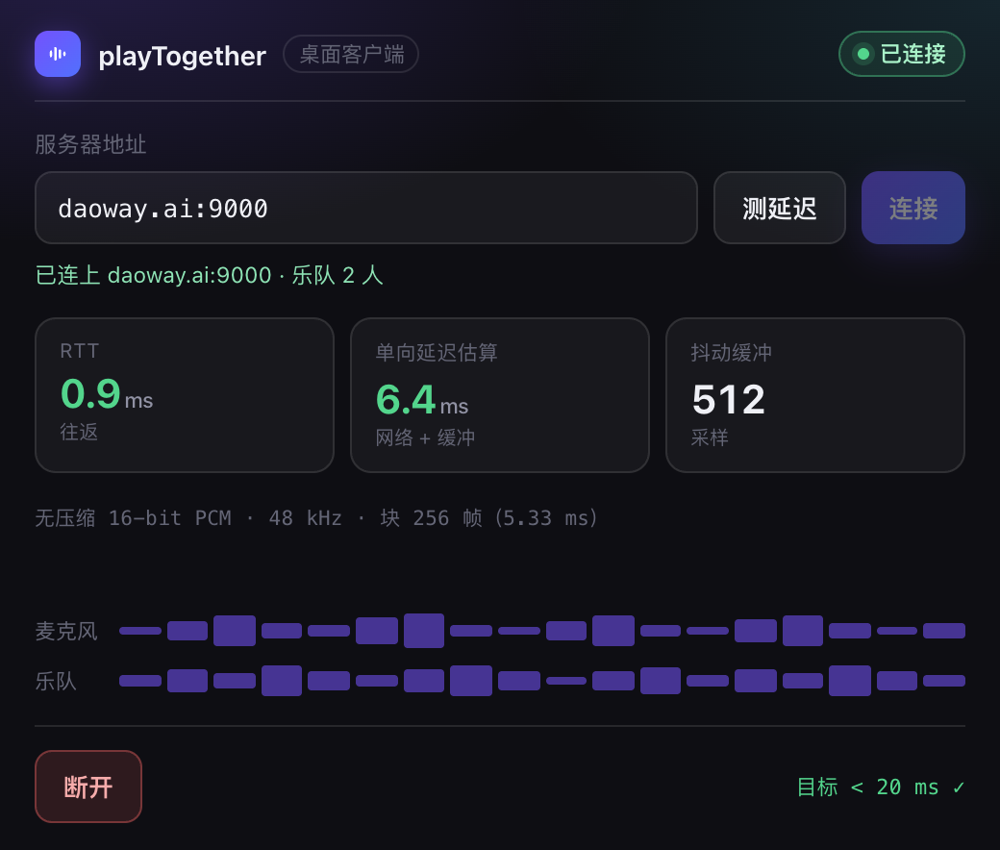
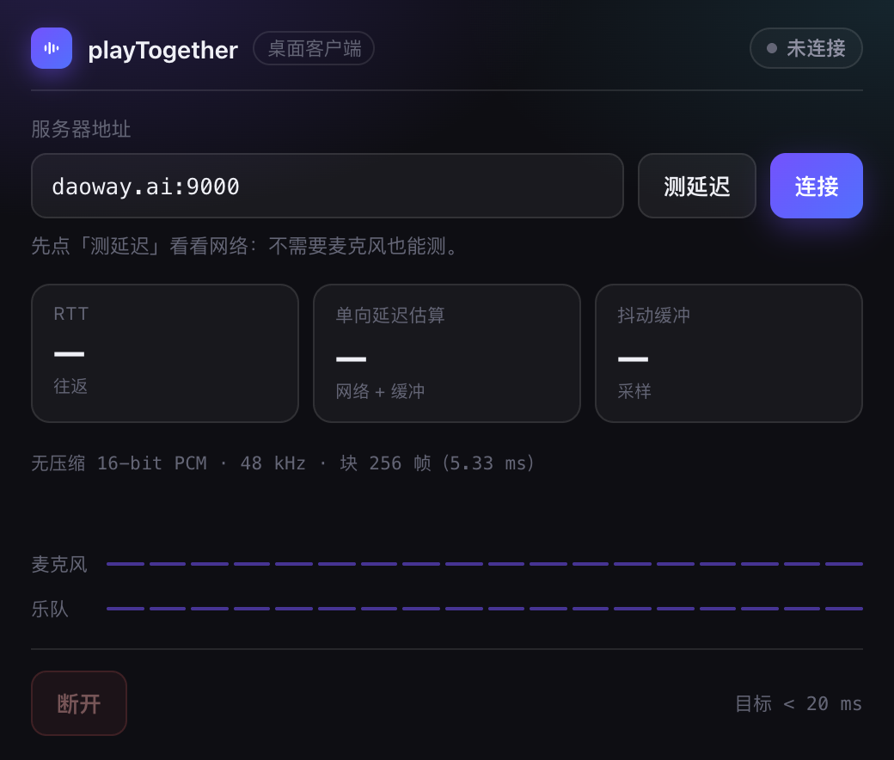
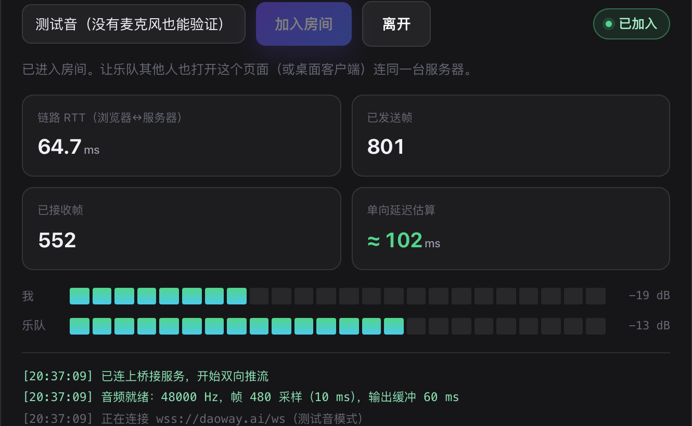

和你的乐队，
零距离合奏。
playTogether 是一套全 Rust 实现的低延迟远程排练系统。 无压缩 16-bit PCM 直接走 UDP，采样级抖动缓冲，RTT 与单向延迟实时可见 —— 目标端到端延迟 < 20ms，让分开的乐手打回同一个拍子。
# 连上成都节点，实时显示延迟 $ jt-cli daoway.ai:9000 ✓ connected daoway.ai:9000 采样率 48000 Hz 块 256 frames (5.33 ms) RTT 0.9 ms 抖动缓冲 2 blocks 单向延迟估算 6.4 ms 目标 < 20 ms ✓ peers: 1 lost: 0.00% underrun: 0
桌面客户端：四步开练
不用敲命令。装好 → 填地址 → 测延迟 → 连接，剩下的交给引擎。
-
1
打开客户端
装好后双击
.app（macOS）或运行.exe（Windows）。安装包还在打包，现在先从源码构建：cargo build --release -p jt-client，产物在client/src-tauri/target/release/。 -
2
填服务器地址
默认已经填好
daoway.ai:9000。要连自己的服务器就改成你的IP:9000，服务端是单个二进制 + systemd，部署只要一分钟。 -
3
先「测延迟」，再「连接」
测延迟只发 ping，不需要麦克风权限，用来确认网络是否达标；点连接后才会打开音频设备，第一次会弹麦克风授权。
-
4
队友连同一台服务器
所有人连到同一个地址就自动进入同一个房间。服务器把别人的声音混好发给你，不含你自己，所以不会听到自己的回声。


上手前值得知道的四件事
- 先关代理。Surge / Clash 会把 UDP 绕到境外再回来，实测能凭空多出 30–50 ms，测出来的数字全是假的。
- 有线比 Wi-Fi 稳。Wi-Fi 抖动大时抖动缓冲会自动加深，延迟跟着涨；能插网线就插。
- 块长可调。256 帧一块 ≈ 5.33 ms；想更低就换 128 帧，代价是 CPU 占用更高、更容易 underrun。
- 命令行党也能用。不想开 GUI 就直接
jt-cli daoway.ai:9000，终端里实时打印 RTT 和缓冲深度。
网页版：不装客户端，直接开练
浏览器发不了 UDP，所以我们加了一条 WebSocket 桥（jt-webd）：浏览器采集的 PCM 在这里转成 JT01 帧塞给播控服务器。网页用户和桌面用户进的是同一个房间。
- 同一个房间 —— 网页、桌面客户端、命令行
jt-cli可以混着用，服务器只认人，不认端。 - 不用装 —— 打开页面 → 允许麦克风 → 点「加入房间」，三步搞定。
- 没有麦克风也能验证 —— 「测试音」模式发 440 Hz 正弦波，专治「我这儿到底通不通」。
- 延迟要高一些 —— 走 TCP + 浏览器缓冲，单向约 60–120 ms，适合听排练、跟节奏；严格 <20 ms 合奏还是用桌面端。

服务器状态，实时可见
下面这些数字每 10 秒从服务器直接拉取，不是写死的。音频服务跑在 UDP 9000，这里展示的是同一台机器上的实时健康数据。
为「同一个拍子」设计的六个细节
远程合奏的敌人是延迟，不是音质上限。整套设计都在往「少一次排队、少一次编码」上压。
零编解码延迟
不压缩，16-bit PCM 直接进 UDP。没有编码器排队、没有解码器缓冲，省掉的就是最容易失控的那几毫秒。
采样级抖动缓冲
按序列号重排、丢弃过期块。网络抖动被缓冲吸收，而不是变成你耳朵里的断音。
混音 Hub 排除自己
服务器把所有人的上行混成一份、排除发送者本人 —— 你听到的是乐队，不是自己的回声。
延迟实时估算
每秒 ping 回显算 RTT，再叠加采集与播放缓冲，客户端直接告诉你「现在是不是还在 20ms 内」。
双平台
macOS 用 CoreAudio，Windows 用 WASAPI，同一套 Rust 引擎，GUI 是 Tauri 桌面客户端。
一个二进制，自托管
服务端是单个静态链接的二进制 + systemd 单元。没有数据库、没有消息队列，一台 2G 小机器就够。
延迟花在哪了
端到端 = 网络单向 + 采集缓冲 + 播放缓冲 + 抖动目标。网络是同城时，瓶颈其实是缓冲区，所以缓冲深度做成可调。
| 环节 | 典型值 | 是否可控 | 说明 |
|---|---|---|---|
| 网络单向 | 0.5 – 1.0 ms | 取决于线路 | 同城直连实测 ICMP RTT 0.9ms；跨城视路由 |
| 采集缓冲 | ≈ 5.3 ms | 可调 | 48kHz / 256 帧一块；块越小延迟越低，CPU 越敏感 |
| 抖动缓冲 | ≈ 5.3 ms | 可调 | 2 块深度起步，按丢包自适应 |
| 播放缓冲 | ≈ 5.3 ms | 可调 | 与采集同块长 |
| 编解码 | 0 ms | 已消除 | 不压缩 PCM |
注意：如果本机挂着代理（Surge / Clash 之类），UDP 可能被绕到境外再回来，实测会凭空多出 30–50ms。测真实延迟前请关掉代理。
30 秒接入
服务端已经跑在 daoway.ai:9000。你只需要跑一个命令行客户端，就能看到自己的真实延迟。
1 · 编译客户端（需要 Rust）
$ git clone <repo> playtogether $ cd playtogether $ cargo build --release -p jt-cli
2 · 连上服务器
$ ./target/release/jt-cli daoway.ai:9000 # 关掉代理后测，RTT 应在个位数 ms
图形客户端（Tauri）目前可用源码本地构建；Windows 已完成交叉编译验证，实机安装包在准备中。
客户端
桌面客户端用 Rust + Tauri 写成，音频后端按平台自动选择。